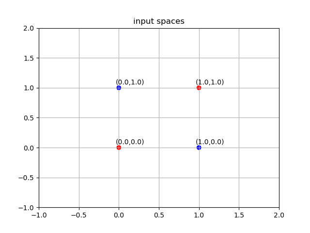
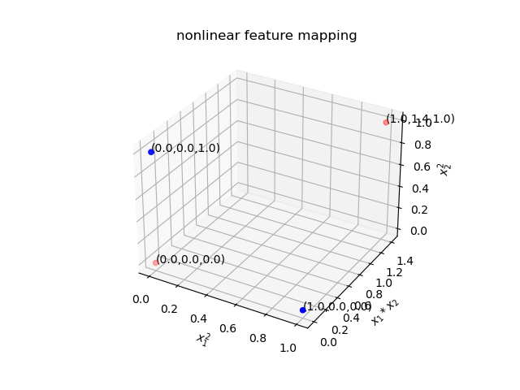
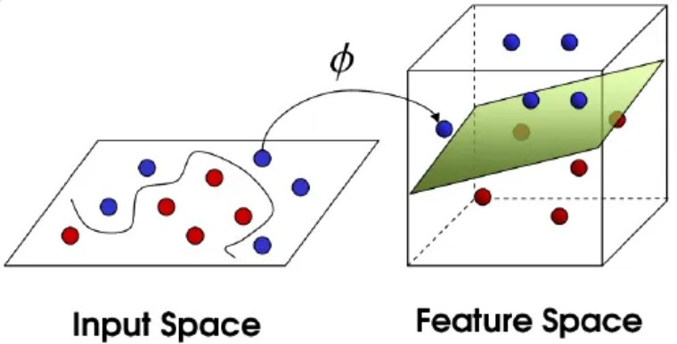

1. 核函数基础¶
1.1. 核函数¶
1.1.1. 示例¶
首先来看一个核函数的例子。假设有XOR数据集\(X = \{(0,0),(1,0),(0,1),(1,1)\}\)，\(y=\{0,1,1,0\}\)，则该XOR异或问题在原输入空间很难分开两类样本，

如果我们对原输入空间样本\(\pmb{x}\)做如下映射\(\phi :\mathbb{R}^2\rightarrow\mathbb{R}^3\)，
不难发现，原空间不可分的XOR问题在新特征空间变的可分，如下图所示

因此，原空间难以解决的问题映射至新特征空间后可以得到解决。特征映射成为了关键步骤。那么特征映射\(\phi(\pmb{x})\)是否必须显式的计算呢？下面，我们来分析一下新特征空间两个任意数据点\(\phi(\pmb{x}),\phi(\pmb{z})\)之间的相似性。采用未正则化的余弦相似性来度量，可知
经过上式分析，我们发现特征映射后的向量做内积运算等价于原空间向量内积的平方。换句话说，我们可以不用显式计算映射\(\phi\)，直接计算\(\kappa(\pmb{x},\pmb{z})\)就可以实现特征映射后的效果，这一技巧也称之为核技巧(kernel trick), 函数\(\kappa(\cdot,\cdot)\)也称之为核函数。

1.1.2. 什么是核函数¶
定义1(内积(inner product)). 令 \(\mathcal{H}\) 为一个向量空间，则一个函数\(\langle\cdot,\cdot\rangle_\mathcal{H}:\mathcal{H}\times\mathcal{H}\rightarrow\mathbb{R}\)定义为\(\mathcal{H}\)的内积，如果满足以下条件：
\(\langle\alpha_1 f_1+\alpha_2 f_2,g\rangle_{\mathcal{H}}=\alpha_1\langle f_1,g\rangle_\mathcal{H}+\alpha_2\langle f_2,g\rangle_{\mathcal{H}}\)
\(\langle f,g\rangle_{\mathcal{H}}=\langle g,f\rangle_{\mathcal{H}}\)
\(\langle f,f\rangle_{\mathcal{H}}\ge 0 and \langle f,f\rangle_{\mathcal{H}}=0\) if and only if \(f=0\)
希尔伯空间是定义了内积的一个空间，并附加了一个技术性条件(A Hilber space is a space on which an inner product is defined, along with an additional technical condition)。
定义2(核函数, Kernel). 令\(\mathcal{X}\)为一个非空集合。一个函数 \(k:\mathcal{X}\times\mathcal{X}\rightarrow \mathbb{R}\)称之为核函数，如果存在一个\(\mathbb{R}\)-Hilbert空间以及映射 \(\phi:\mathcal{X}\rightarrow \mathcal{H}\)且满足\(\forall x,x'\in \mathcal{X}\)，
Lemma(Sums of kernels are kernels). 给定\(\alpha >0\)以及 \(k,k_1,k_2\)为核函数定义在域\(\mathcal{X}\), 则有\(\alpha k\)和\(k_1+k_2\)都是定义在\(\mathcal{X}\)的核函数.
Lemma(Mapping between spaces). 若\(\mathcal{X}\) 和\(\tilde{\mathcal{X}}\)为非空集，且有一个映射\(A:\mathcal{X}\rightarrow\tilde{\mathcal{X}}\). 若有\(k\)定义在域\(\tilde{\mathcal{X}}\). 则\(k(A(x),A(x'))\)是一个定义在\(\mathcal{X}\)的核函数.
Lemma(Products of kernels are kernels). 给定\(k_1\)定义在域 \(\mathcal{X}_1\) 以及\(k_2\)定义在域\(\mathcal{X}_2\), 则 \(k_1\times k_2\)是一个定义在域\(\mathcal{X}_1\times\mathcal{X}_2\)的核函数。如果\(\mathcal{X}_1=\mathcal{X}_2=\mathcal{X}\), 则 \(k=k_1\times k_2\) 是一个定义在域\(\mathcal{X}\)的核函数。
1.1.2.1. 常用核函数¶
定义 (多项式核函数, Polynomial kernels). 假设\(x,x'\in \mathbb{R}^d\) for \(d\ge 1\)，且\(m\ge 1\)是一个整数，以及\(c\ge 0\)是一个正实数，则有如下核函数：
我们能否将求和与乘积法则的结合推广到有无限多项的求和?事实证明是可以的。
定义 (\(l_p\)空间) 关于\(p\)-可求和序列的空间\(\ell_p\)，定义为对所有的\((a_i)_{i\ge 1}\)都有
核函数可以用\(\ell_2\)序列来定义。
Lemma. 给定一个非空集合\(\mathcal{X}\), 以及\(\ell_2\)空间的一个函数序列\((\phi_i(x))_{i\ge 1}\)，其中映射\(\phi_i :\mathcal{X}\rightarrow \mathbb{R}\) 是特征映射\(\phi(x)\)的第\(i\)th坐标，则有一个定义在域\(\mathcal{X}\)的核函数
泰勒级数展开可以用来定义具有无穷多个特征的核(Taylor series expansions may be used to define kernels that have infinityly many features)。
定义 (泰勒级数核， Taylor series kernel). 假设我们可以定义泰勒级数
for \(r\in (0,\infty]\), with \(a_n\ge 0\) for all \(n\ge 0\). 可定义\(\mathcal{X}\)为空间\(\mathbb{R}^d\)的\(\sqrt{r}\)-球, 则如果\(x,x'\in\mathbb{R}^d\)满足\(\Vert x\Vert <\sqrt{r}\), 我们有以下核函数
证明. 核的非负加权和是核，核的乘积是核，所以下面的是核，如果它收敛，
根据Cauchy-Schwarz不等式
因此泰勒级数核收敛.
泰勒级数核的一个例子是指数核(An example of a Taylor series kernel is the exponential)。
定义 (指数核 (Exponential kernel)). 域\(\mathbb{R}^d\)的指数核定义为
我们可以把以上所有的结果结合起来得到如下结果(乘积规则、映射规则等)
示例 (高斯核 Gaussian kernel). 定义在域\(\mathbb{R}^d\)的高斯核为
证明. 对于指数核函数\(k_1\)进行正则化，
则有，
因此可得，高斯核为指数核\(k_1\)的标准化结果。显然高斯核也是一个核函数。
高斯核的特征映射为无穷维。下面对其特征映射进行分解，为简化计算，可先假设\(\gamma =1 \)。
可知，特征映射为，
1.2. 特征映射的基本运算¶
模长
标准化
线性组合
距离
均值
样本均值距离
平均样本均值距离
中心化
样本中心化
核函数中心化
1.3. 投影¶
\(\phi(\pmb{x})\)在向量\(\pmb{w}\)上的投影\(P_{\pmb{w}}(\phi(\pmb{x}))\)为，
如果\(\pmb{w}\)已单位化，则有，
即，正交投影\( P_{\pmb{w}}^\bot \phi(\pmb{x}) \) 为，